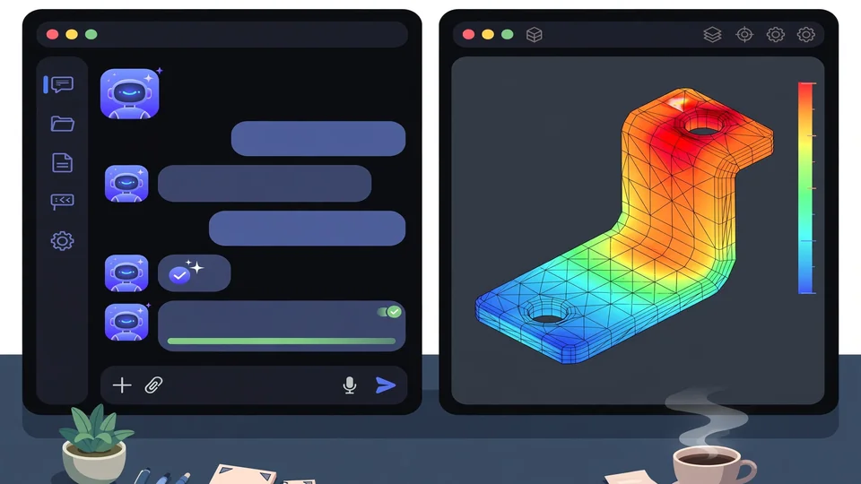
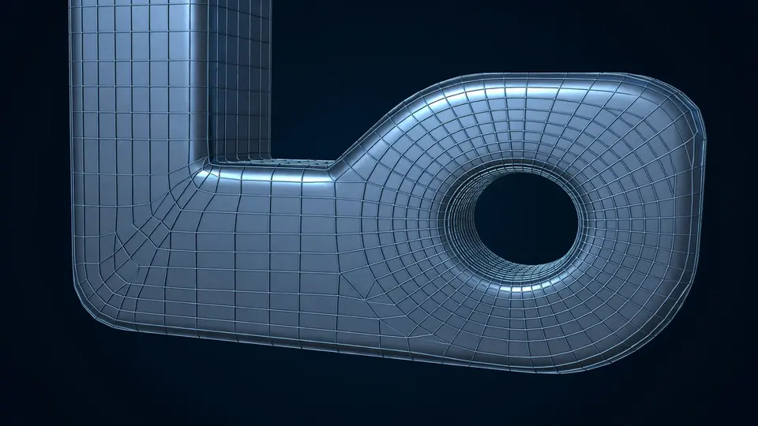

Let Claude run a finite-element analysis: a hands-on guide to FieldCraft
Ask an engineer what a bracket can hold and you get a simulation: mesh the part, fix one end, load the other, read the stress. FieldCraft is the open-source version of that workflow — and it speaks MCP, so Claude Code can run the whole analysis in one prompt.
- What: FieldCraft — an open-source, pure-Rust computer-aided engineering (CAE) app: parametric parts, tetrahedral and hexahedral meshing, structural, thermal and fluid solvers, and an MCP server so AI agents drive the same commands as the UI.
- Project: tangency-labs/fieldcraft, Apache-2.0 license, created 2026-10-13 — v0.7.0 released 2026-10-18, with 197 GitHub stars (verified 2026-10-26).
- The demo that matters: the built-in
ibeamsample — a 200 mm steel I-beam, swept all-hex (hex8, 4 mm), clamped at one end, 1000 N down at the free end — solves to a 0.18 mm tip deflection, against 0.184 mm from beam theory with shear. - Install: macOS universal disk image, Windows zip, Linux AppImage, tarball, .deb and .rpm, plus a no-install browser demo; a separate macOS CLI zip ships
fieldcraft-clion its own. - Verification: every capability is checked against closed forms and published benchmarks (NAFEMS, MacNeal–Harder, Scordelis–Lo, the elastica, Hill's plastic cylinder, Rivlin's tube) — 170 of 176 quantities pass in 50 cases, the other 6 documented as known failures.
- Units: samples are defined in mm, tonne, seconds, newtons and MPa, and each opens and solves within half a minute (the large electronics-cooling studies excepted).
Ask an engineer what a bracket can hold and you get a simulation: mesh the part, fix one end, load the other, read the stress. It used to mean a five-figure license, a week of training, and a mesher that fought you on every fillet. FieldCraft is the open-source version of that workflow — a pure-Rust CAE app that goes from a parametric part to a solved analysis — and it speaks MCP, so the coding agent you already use can drive it: open a part, mesh it, set the material and the load, solve, and report the numbers back, in one prompt.
The project is tangency-labs/fieldcraft, Apache-2.0, created 2026-10-13, with v0.7.0 released 2026-10-18 and 197 GitHub stars at writing time. It is early — the authors say so themselves, “early but working end to end” — but the verification discipline is unusual for a project this young: every capability is checked against closed forms and published benchmarks, with the results frozen so they cannot drift. This guide installs it, connects Claude Code, and runs the I-beam cantilever sample end to end, so you can see an agent do real engineering arithmetic — and check it.
What you'll need
- A Mac, Windows PC or Linux machine — or just a browser, for the no-install demo
- Claude Code (or any MCP client) if you want the agent-driven version; the desktop app alone works for the manual version
- No license, no account, no API key — the app and the samples are free and local
- About 15 minutes: the download, one MCP command, one prompt, one check
Let Claude run a finite-element analysis
1. Download the v0.7.0 build for your platform
Open the Releases page for tangency-labs/fieldcraft and take the v0.7.0 file for your machine: on macOS, open the universal .dmg and drag FieldCraft into Applications (Apple Silicon and Intel both work); on Windows, unzip and run fieldcraft.exe; on Linux, use the .AppImage (allow it to run as a program), the .tar.gz, or the .deb/.rpm. Every release lists its checksums in SHA256SUMS.txt — check your download against it before you run it. Every package ships fieldcraft-cli alongside the app; macOS also has a separate CLI-only zip if you want the agent server without the GUI. In a hurry, or on a machine you cannot install on, open the browser demo at tangency-labs.github.io/fieldcraft instead — it runs the same app, with no install, and the samples below work there too (the MCP steps need the local install).
2. Connect Claude Code to FieldCraft over MCP
FieldCraft speaks the Model Context Protocol over stdio, and its server is the CLI itself: every tool runs an engine command, the same ones the UI, scripts and command line run, and it never opens a dialog or a file picker. Find your CLI path — /Applications/FieldCraft.app/Contents/MacOS/fieldcraft-cli for the macOS app in Applications, <unpacked-folder>/bin/fieldcraft-cli for the Linux tarball, /usr/bin/fieldcraft-cli for an installed .deb or .rpm, <unpacked-folder>\fieldcraft-cli.exe on Windows, or <repository>/target/release/fieldcraft-cli if you built from source — and register it with one command, using an absolute path and quoting it if it contains spaces:
claude mcp add fieldcraft -- /path/to/fieldcraft-cli mcpThe same setup works as a project .mcp.json or in another client's configuration (Claude Desktop's claude_desktop_config.json): a server named fieldcraft whose command is the CLI path and whose args are ["mcp"]. By default the server runs headless — an in-process session with no window, screenshots drawn offscreen — which is what you want for an agent working on its own. If you would rather watch it work, start the app with fieldcraft --control 7070 & and bridge the server to it with claude mcp add fieldcraft -- /path/to/fieldcraft-cli mcp --connect 127.0.0.1:7070. If the app cannot be reached when the server starts, it falls back to a headless session and says so on stderr; stdout carries only protocol messages.

3. Ask Claude to open the I-beam sample and solve it
FieldCraft ships ready-to-solve samples: open one from File → Samples, start the app with fieldcraft --sample NAME, or — the agent way — have Claude open it with the file.sample command and solve it with solve.run. Send Claude this prompt, verbatim or in your own words:
Open the FieldCraft sample called ibeam, solve it, and report back: the tip deflection, the peak von Mises stress and where it occurs, and how the deflection compares with beam theory. Show me the deformed shape.What should happen: Claude opens the sample — a 200 mm steel I-beam, opened as SolidCraft geometry with persistent face names, swept all-hex (hex8 elements of 4 mm, incompatible modes), clamped at F2:start and loaded with 1000 N down through a kinematic coupling to F2:top — solves it, and reports the numbers. The sample is one of the quick ones: it opens and solves within half a minute. If you run it manually instead, the same sample is File → Samples → I-beam cantilever, then Solve.
4. Check the answer against beam theory
This is the step that makes the exercise worth doing. The sample's own documented check says the tip moves 0.18 mm down, against 0.184 mm from beam theory with shear — a couple of percent apart, which is what a converged mesh should give you. Ask Claude to state both numbers and the difference, and look at the deformed shape yourself: the bending stress in the flanges, highest at the clamp, falling toward the free end. If Claude reports a deflection nowhere near 0.18 mm, something changed — a different sample, a different load, a mesh that did not converge — and the check caught it before you trusted it. That is the whole point of a sample with a closed-form answer: the agent's output is falsifiable in one line. Results, the project notes, never depend on the thread count, so the same sample on another machine should give the same numbers.
5. Run a second sample on your own
One sample proves the pipeline; a second proves you can steer it. Two good next runs, both fully defined and quick: drop-test, an aluminium L-bracket dropped 2 m onto a tilted floor — explicit dynamics, the strike's stress waves, von Mises peaking near 130 MPa in the bend, below the 240 MPa yield, so the drop leaves no permanent set; and rubber-seal, a gasket ring squeezed 25% between bonded plates — nonlinear static with large deformation, Mooney–Rivlin rubber, von Mises peaking near 7 MPa where the bulge meets the plates. Or stay on the I-beam and ask Claude to change the question: double the tip load to 2000 N and confirm the deflection roughly doubles too (linear elasticity says it should), or swap the material and explain what changes. Each sample carries its own check in the docs, so keep asking for the check, not just the picture.

6. Confine the agent to one project folder
Before you hand FieldCraft a real project, fence it in. Restart the MCP server with a read root and a write root:
claude mcp add fieldcraft -- /path/to/fieldcraft-cli mcp --automation-read-root /work/bracket --automation-write-root /work/bracket/outWith both flags set, every file a command reads must lie inside the read root and every file it writes inside the write root — a design or mesh outside the read root simply is not opened, and a refused path comes back as an ordinary tool error the agent can read and correct. Give the same folder twice for both, and note the sharp edge: a root left out grants none of its access, so with only a read root, nothing can be written at all. Without either flag nothing is confined — fine for the samples, not for a folder with anything you care about. Paths are compared by whole folder names, so /work2/x is not inside /work, and a link leading out of a root is outside it.
What you built: an agent that can run a real structural analysis — open a part, mesh it, define the model, solve, and report numbers you can check against theory — plus the habit that makes it safe: always ask for the check, and always fence the file access before the project is real. From here the same commands scale: the app writes Abaqus, Nastran and LS-DYNA decks (each refusing by name what it cannot express), and its own .fieldcraft files are text-diffable, so a model lives in version control like code.
Honest limitations
- It is early software, by its own account. “Early but working end to end” is the project's status line: hex meshing is the centre of gravity right now, and buckling and arc-length, contact, and the wider material and multiphysics library are still to come. The rubber-seal sample's groove and plates, for example, are prescribed displacements today — implicit contact is an open issue, not a feature.
- The verification is good, not perfect. 170 of 176 quantities pass across 50 cases; the other 6 are documented known failures in the oracle docs. Read those before you trust a result in the same corner — a documented failure is a warning, not a bug report.
- The browser demo is a demo. It runs the app with no install, but the MCP steps in this guide need the local CLI, and the big electronics-cooling studies take minutes on CPU (the AIO radiator, at 5 million cells, needs a GPU) — the half-a-minute promise is for the small samples, not everything.
- Meshing is the hard part, and it still shows. A filleted bracket that cannot be swept in one piece has to be split into 30 cells first; the octree all-hex mesher handles any part automatically, but the structured hex path needs that partitioning work. Expect to learn the mesher before you trust the solver.
- An agent's answer is only as good as your check. The I-beam check works because beam theory exists for it. For a part with no closed form, the agent's numbers are a claim, not a verification — compare against a second mesh, a second solver, or a test, before the numbers leave the screen.
Frequently asked questions
Do I need to know finite-element theory to use it?
No, for the samples: each one opens fully defined — geometry, mesh, material, boundary conditions and loads — and solves within half a minute, with its own check against a closed form or a reference solution. Reading the results well still takes engineering judgment, and FieldCraft is explicit that it is early software, not a certified solver.
Does the agent need the desktop app open?
No. The MCP server runs headless by default as an in-process session, so Claude Code can build and solve models with no window. If you want to watch it work, start the app with --control 7070 and bridge the server to it with --connect 127.0.0.1:7070.
Can the agent read or write any file on my machine?
Only what you allow: start the MCP server with --automation-read-root and --automation-write-root and every file it opens or saves must lie inside those folders. Without either flag nothing is confined, so set the roots before handing it a real project.